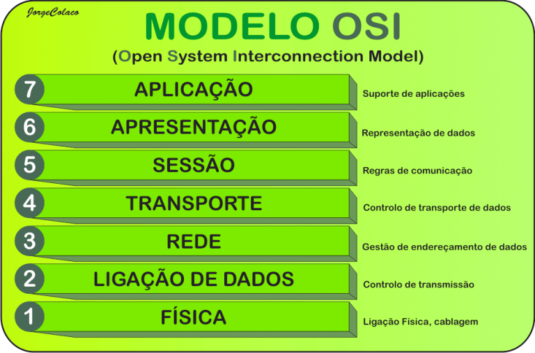

OSI é a sigla para Open Systems Interconnection – ou Sistemas Abertos de Interconexão, em português. Basicamente, esse modelo consiste em um padrão para os protocolos de rede. Simplificando ainda mais, ele determina quais regras de comunicação devem ser seguidas para a conexão entre dois ou mais computadores.
O TCP/IP é um conjunto de protocolos de comunicação. O nome vem de dois protocolos TCP (Transmission Control Protocol) e o IP (Internet Protocol). Ele tem por objetivo padronizar todas as comunicações de rede, principalmente as comunicações na web.
O Protocolo UDP é um protocolo de comunicação utilizado em toda a internet para transmissões com validade especialmente limitada, tais como reproduções de vídeo ou pesquisas no DNS. Ele acelera as comunicações ao não estabelecer formalmente uma conexão antes que os dados sejam transferidos. Isso permite que os dados sejam transferidos muito rapidamente, mas também pode fazer com que pacotes se percam em trânsito além de criar oportunidades de exploração na forma de ataques DDoS.
O FTP (File Transfer Protocol) ou Protocolo de Transferência de Arquivos, em português, é um protocolo usado para transferir arquivos por uma rede de computadores, desde uma local à internet. Basicamente, permite a troca de arquivos entre dois computadores de modo direto, em que um ganha acesso às pastas do outro.
Os servidores DNS (Domain Name System, ou Sistema de Nomes de Domínios) são os responsáveis por localizar e traduzir para números IP (Internet Protocol) os endereços dos sites que digitamos nos navegadores — como www.canaltech.com.br, por exemplo.
Do inglês Dynamic Host Configuration Protocol (que ficaria, em português, algo como Protocolo de Configuração Dinâmica de Endereços de Rede), é um protocolo utilizado em redes de computadores que permite às máquinas obterem um endereço IP automaticamente.
HTTP e HTTPS são protocolos de segurança na Internet bastante evidentes quando acessamos sites de banco ou lojas virtuais para realizar transações financeiras. Geralmente, eles aparecem por meio de avisos para verificar o cadeado de segurança ou observar a sigla HTTPS na barra de endereços do navegador.
um servidor web é um computador responsável pelo armazenamento, processamento e entrega dos arquivos dos sites para os navegadores. Através deste processo, os servidores web carregam e entregam a página solicitada para o navegador do usuário — como o Google Chrome, por exemplo. Os servidores web também utilizam o Simple Mail Transfer Protocol (SMTP) e File Transfer Protocol (FTP) para processar arquivos para emails e armazenamento.